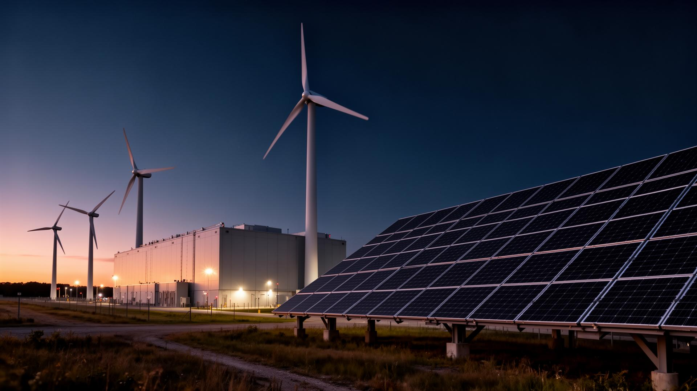

Our Expertise
Executive search and specialist recruitment across data centers, AI infrastructure and mission critical environments, from the boardroom to the build site.
The Build Lifecycle
Every step needs someone accountable for it, from the development director securing the site to the operations leader keeping it live. Our executive search finds the people who own each stage and the leaders who run the whole programme.
Finding the right land, securing power and permits, and building the business case. The decisions made here set the cost, timeline and capacity of everything that follows.
Turning the concept into a buildable facility across electrical, mechanical, cooling and structure, and ordering the long lead equipment early enough to protect the programme.
Choosing the contractors and supply chain, negotiating terms and locking in delivery slots in a market where equipment and labour are in short supply.
Delivering the shell and the electrical and mechanical fit out safely, on time and on budget, often across several phases running at once.
Testing every system, in stages, up to a full test of the whole facility, to prove it performs before anything goes live.
Handing over to the operations team, onboarding tenants and keeping uptime high, then planning the next phase on the campus.
Executive search is at the heart of what we do. Every senior search runs as a structured, confidential process: a detailed brief and calibration with your leadership team, a full map of the market, discreet direct approaches to people who are not looking, and rigorous assessment before anyone reaches your shortlist. You get one point of contact, regular updates and a shortlist in one week or less, with the professionalism and discretion a senior appointment deserves, all the way through to offer, resignation and their first day.
AI is changing how data centers are designed, powered and cooled. Higher rack densities, liquid cooling, GPU clusters and gigawatt scale campuses need leaders and engineers who have done it before, and there are very few of them. We work with hyperscalers, neoclouds, GPU cloud providers and AI factory developers to find the people who can secure power, deliver high density builds at speed and run AI infrastructure reliably once it is live.
Speed to market depends on the delivery team. We find the people who take a site from design through construction and commissioning to handover, across greenfield hyperscale campuses, AI ready expansions and colocation retrofits. We understand the pressure that programme, budget and quality put on a live build, and we look for a proven record of delivering on time and on spec.
Once a facility is live there is no margin for error. We find operations leaders and critical facilities teams who understand the zero downtime environment: the discipline of maintenance, change control and incident response, and the culture that keeps uptime high year after year. As high density and liquid cooled halls come online, we also find the people with the experience to run them.
The software and network layer is what turns a building into a platform. We recruit the architects and engineers who design, connect and scale cloud and network infrastructure, with real experience across Google Cloud, Amazon Web Services and Microsoft Azure, and the high performance networking that AI workloads now demand.
Capacity only creates value once it is sold and powered responsibly. We recruit commercial leaders who win hyperscale and enterprise customers and grow key accounts, alongside the energy and sustainability specialists helping operators secure power, cut emissions and meet ever tighter efficiency targets, including placements supporting Schneider Electric and similar partners.

Whichever side of the table you're on, we know the data center and AI infrastructure market better than anyone.